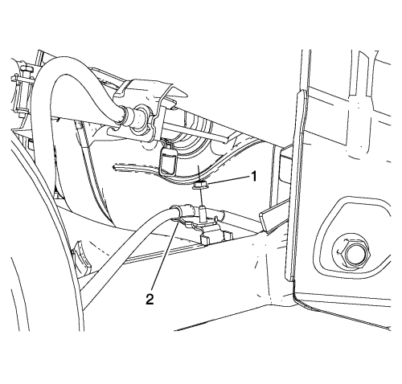
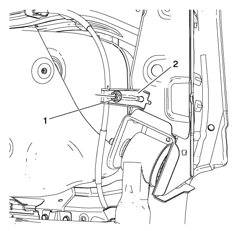
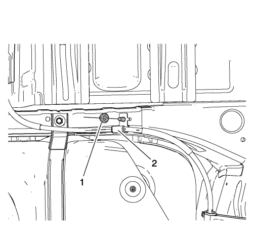
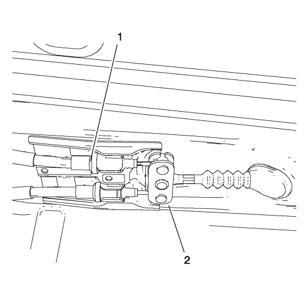

Sustitución del cable del freno de estacionamiento
Procedimiento de desmontaje
Advertencia: Consulte Advertencia relacionada con el polvo procedente de los frenos en la sección Prólogo
- Asegúrese de que el freno de mano esté completamente suelto.
- Suelte el guardapolvo de la palanca del freno de mano, de la consola de piso, apretando suavemente hacia dentro los costados del retenedor del guardapolvo, y tire del guardapolvo hacia atrás.

- Con la palanca del freno de mano en la posición de freno suelto, afloje la tuerca de ajuste (1) lo suficiente para liberar completamente la tensión del cable delantero.
- Elevar el vehículo y soportarlo de manera segura. Consultar Elevación del vehículo con un gato .
- Desmonte el conjunto de rueda y neumático. Consultar Desmontaje y montaje de la rueda y el neumático .
- Desmontar el tambor de freno. Consultar Sustitución del tambor de freno .

- Desmonte el clip de sujeción del cable del freno de mano trasero (1), del plato portafrenos del freno de tambor.
- Utilizando un destornillador de punta plana, desconecte el cable del freno de mano, de la palanca del freno de mano de la zapata del freno de tambor.

- Desmonte la tuerca de la abrazadera de fijación del cable del freno de mano (1), y desmonte la abrazadera de fijación del cable del freno de mano (2), del soporte situado en el eje trasero.

- Desmonte la tuerca de la abrazadera de fijación del cable del freno de mano (1), y desmonte la abrazadera de fijación del cable del freno de mano (2), del larguero trasero.

- Desmonte la tuerca de la abrazadera de fijación del cable del freno de mano (1), y desmonte la abrazadera de fijación del cable del freno de mano (2), del travesaño del panel de piso.

- Suelte el cable del freno de mano (1), del soporte situado en el panel de piso.
- Separe el cable del freno de mano (1), del compensador de los cables del freno de mano (2), y desmonte el cable del freno de mano, del vehículo.
Procedimiento de montaje
- Utilizando un destornillador de punta plana, conecte el cable del freno de mano a la palanca del freno de mano de la zapata del freno de tambor.
- Monte el clip de sujeción del cable del freno de mano trasero (1) en el plato portafrenos del freno de tambor.
- Conecte el cable del freno de mano (1) al compensador de los cables del freno de mano (2), y monte el cable del freno de mano (1) en el soporte de fijación situado en el panel de piso.
- Monte la abrazadera de fijación del cable del freno de mano (2) en el travesaño del panel de piso.
Precaución: Consulte Precaución con las fijaciones en la sección Prólogo
- Monte la tuerca de la abrazadera de fijación del cable del freno de mano (1), y apriétela a 22 N·m (16 lb pie).
- Monte la abrazadera de fijación del cable del freno de mano (2) en el larguero trasero.
- Monte la tuerca de la abrazadera de fijación del cable del freno de mano (1), y apriétela a 22 N·m (16 lb pie).
- Monte la abrazadera de fijación del cable del freno de mano (2) en el soporte situado en el eje trasero.
- Monte la tuerca de la abrazadera de fijación del cable del freno de mano (1), y apriétela a 9 N·m (80 lb pulg.).
- Montar el tambor de freno. Consultar Sustitución del tambor de freno .
- Monte el conjunto de rueda y neumático. Consultar Desmontaje y montaje de la rueda y el neumático .
- Ajuste la tensión de los cables del freno de mano. Consultar Ajuste del freno de mano .
| © Copyright Chevrolet. Reservados todos los derechos |